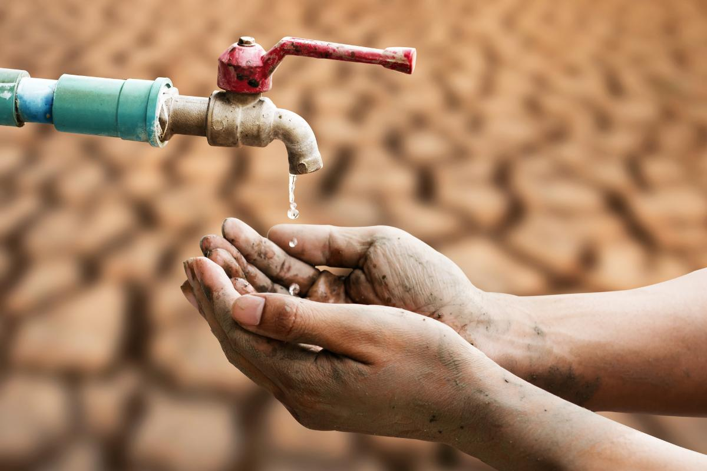

La escasez de agua en la ciudad de México
Inicio
Durante 2024, México ha experimentado efectos negativos de una reciente escasez de agua. Durante los años recientes, las regiones del centro y norte del país padecieron de muchas sequías debido a diversos factores. Con datos del banco mundial, la disponibilidad de agua era de 10,000 metros cúbicos (m³) en el año 1960 a 4,000 m³ en el 2012. De igual manera, para 2030 se cree que la disponibilidad podría llegar a los 3,000 m³ por persona anual. (IMCO Staff, 2023)
¿Cuáles son las causas y posibles soluciones de la escasez de agua en la ciudad de México en 2024?
Primero, analizando los factores que intervinieron como causas de la escasez de agua, podemos encontrar que, debido a la falta de precipitaciones en la ciudad de México y los estados del centro, el Sistema Cutzamala (la fuente de agua potable que abastece a la zona del valle de México) se encuentra en un punto incluso por debajo del 40% de su capacidad para almacenar agua potable. (EL Financiero, 2024)

Algunos otros factores que sustentan la problemática tienen que ver también con la sobreexplotación del acuífero subterráneo, las recurrentes fugas que hay en el sistema y una infraestructura obsoleta que necesita una renovación para evitar otros obstáculos. (Barragán, 2024)
De enero a mayo, mientras transcurre la temporada de estiaje de 2024, las alcaldías más afectadas de la ciudad de México serán principalmente:
- Iztacalco
- Iztapalapa
- Tlalpan
- Venustiano Carranza
Como resultado y para intentar mantener informadas a las personas, el Sacmex ha puesto a disposición de los habitantes de la ciudad de México, un sitio web llamado “agua en tu colonia” en el que puedes acceder a las fechas y horarios en los que está programado el suministro para tu dirección. (EL Financiero, 2024)
Actualmente se prevé que para el 2030, únicamente el 8% de la capital mantenga un buen servicio de distribución de agua. (EL Financiero, 2024)
Por otro lado, el preludio más sonado en las redes fue que el día 0 estaría cercano a llegar a escasos días, ya que se divulgó que podría aparecer el mismo 26 de junio de 2024. Sin embargo, Conagua, en el área de comunicación, declararon que ésta fue “una mala interpretación”, ya que se sugirieron distintos escenarios durante una conferencia de prensa el pasado noviembre acerca del estado del Cutzamala. (Díaz, 2024)
Como primeros pasos para comenzar a preservar el agua, según información del jefe de gobierno Martí Batres Guadarrama, podrían ser tales como:
- Cerrar las llaves de agua mientras no se usa.
- Detectar y atender inmediatamente fugas en los domicilios y en las áreas públicas.
- Reutilizar el agua para tareas que no precisen de agua potable.
- Ahorrar toda el agua posible en las áreas de baño.
(SACMEX, 2024)